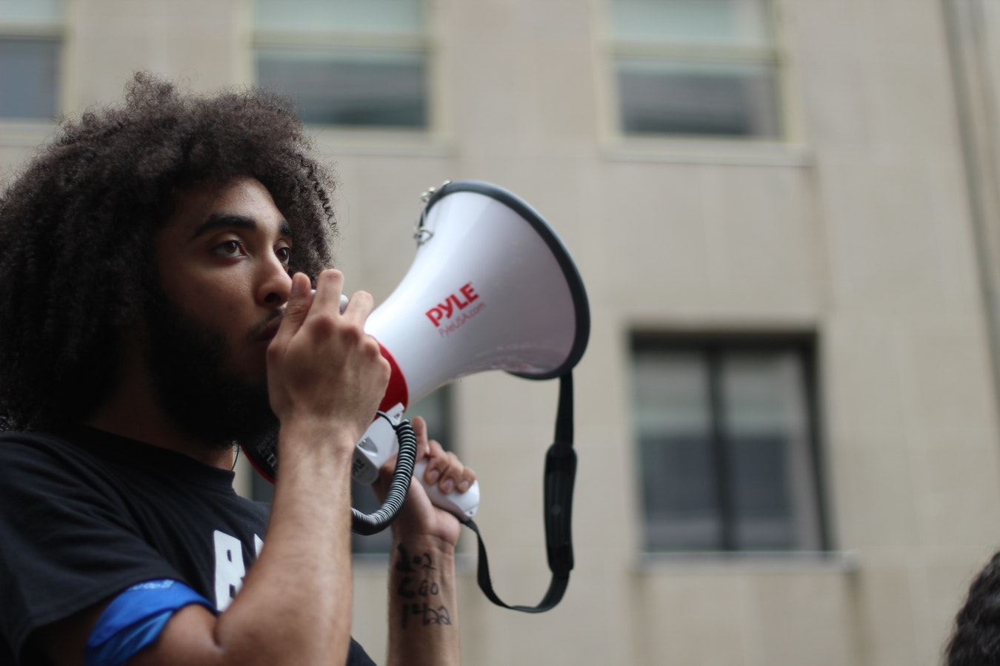

In Chapel Hill, a town where Asian-Americans make up over 12 percent of the population, it may be surprising to discover that only three citizens of Asian descent have ever run for town office.
“There are very few town staffs that are from the Asian community…none of them, even from middle management,” said Hongbin Gu, the town’s first Asian-American Councilwoman, who was elected in 2017, according to the Town of Chapel Hill website.
One of the reasons why this number has been so low might be the generally low level of involvement by this population in any area of government.
Jason Yu, a junior studying computer science, statistics, cognitive science and Chinese at UNC-Chapel Hill, said this lack of representation was not particularly astounding.
“That’s a pretty high number actually,” he said. “I’m surprised that there are any.”
Yu has taken a course taught by Jennifer Ho, a professor in the English department at UNC-Chapel Hill that specializes in the Asian-American experience. As there is currently no Asian-American studies department, Yu said that usually between zero and two courses are offered a semester that specialize in this subject area.

According to the research done in Leads Us, a project under the Woman Donors Network, (a network committed to representing and protecting minorities), in 2014, only 18 percent of government officials in North Carolina were minorities, while 38 percent of the population are minorities. That is a significant difference of 20 percentage points of the population not being represented.
The study also showed that while only 31 percent of the population was white males, they occupied 61 percent of government positions. Contrastingly, according to an article from October 2017 by the Herald Sun, 7 percent of Chapel Hill voters are of Asian descent.
According to this demographic data from the Town of Chapel Hill, no officers of Asian descent worked in the town police department at the time of data collection in 2016.
Yu said this lack of involvement can be attributed to two things.
“One big reason,” she said, “is this idea of emasculation of the Asian or Asian-American male…Asian-American men and women are viewed as submissive and not willing or able to take on these roles. The result of that is there is not a lot of Asian-Americans in government.”
“Another potential reason, is, of course, they’re not interested. Historically, Asian-Americans have progressed in their social status, essentially raised themselves…quote on quote, above other minority groups, by trading political activism and essentially social status in exchange for economic development, that will allow them to give back social status in the future.”
In an effort to change that, Gu said she is working on outreach for Asian communities to bring up the level of involvement. She said that it’s a dual responsibility, that Asian communities need to increase their participation and the town needs to work on bringing people into its activities.
Interestingly, in a random 400 resident 2018 survey conducted by the town, 56 people were of Asian descent (a relatively small subset). Of those results, 35.71 percent of the Asian/Pacific-Islander population felt neutral to how much their voice could influence town decisions, with most of the rest of the population drifting toward “satisfied” and “I don’t know.”
Perhaps more interesting, another question of the survey showed that over half of the responses were satisfied that Chapel Hill supports diverse populations. Twenty-five percent were neutral.
Other students display this tendency towards neutrality.
“Honestly, if I have a choice, I will try to stay away from it [politics],” said Kelly Hsu, a senior majoring in advertising and Japanese at UNC. “It’s not my place to a say a lot of things, and especially with the political climate right now, I don’t know if I want to be involved, either.”
Hsu said her upbringing may have influenced her disinterest in politics. Recently having become an American citizen, she feels like she should become more involved.
“But I’m just not interested, especially right now, with whoever’s in office,” Hsu said.
There does seem to be some movement towards representation, however, at least on Chapel Hill’s campus.
Samuel Li, a sophomore Neuroscience and Biology student and historian for the Asian American Student Association, said the campus group has a political leaning, with a political chair and committees.
Li also said he took part in a logistics committee last year and worked with different organizations, namely the North Carolina Asian Americans Together group, which emphasizes Asian-American representation through voter registration drives and other events.
Yu has also worked with another group on campus, the Asian American Pacific Islander Working Group.
The AAPI Working Group, founded in Spring 2017, works toward representation and “being recognized as a minority…having professors, resources, and ideally an Asian-American studies major that allows us to learn more about our own culture,” Yu said.